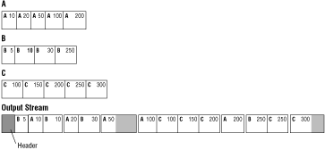

The DataStreamer works on a stream file. The stream file contains all video, audio, and other data in a compressed and interleaved form and contains timestamps. This section explains basic concepts and terminology. Specifically:
Compressing data and creating chunk files of each type of data using the appropriate DataStreamer tools.
Using the Weaver tool and a Weaver script to create a single stream file from the different chunk files. The stream file contains:
All data, interleaved, with timestamps
A stream header with information about buffer size, audio channels, and so on, that the Weaver tool extracts from the Weaver script
Filler chunks that organize the data into stream blocks
Control chunks that mark branch locations and special actions (optional)
The figure below shows an example of three files that have been merged into a single stream file with a stream header. The numbers are the timestamp associated with each data chunk. In the output stream, the shaded areas are filler placed in the stream to pad the data to the logical block size.

Figure 1: Three chunk files are merged to create a single stream file.
Streamblocks consist of interleaved chunks. Disc reads are done streamblock by
streamblock.
Streamblocks must be quad-byte aligned. Streamblock size must be a multiple of media size, only one size per stream is possible. Size of streamblocks must match the buffers established by the library.